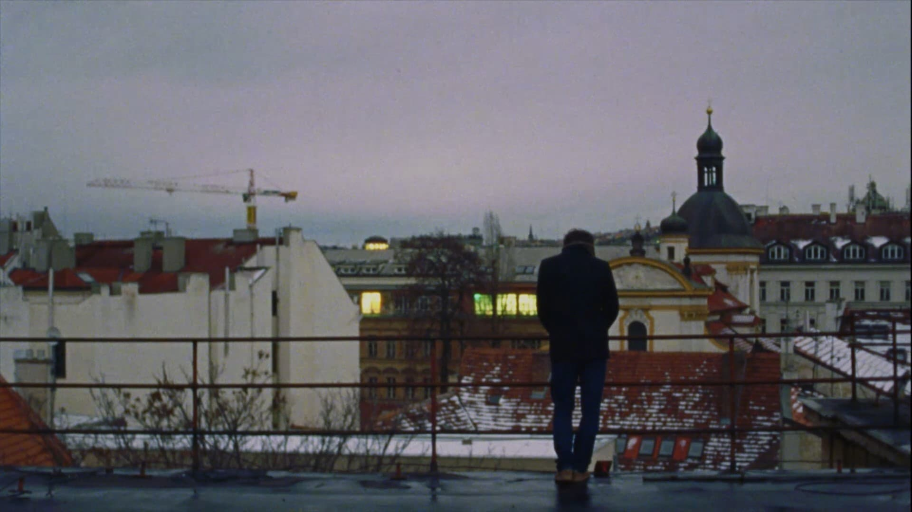
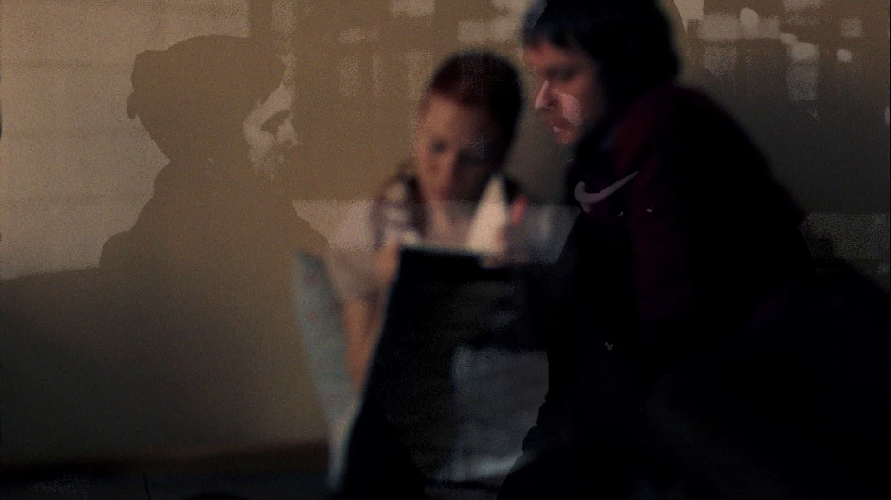
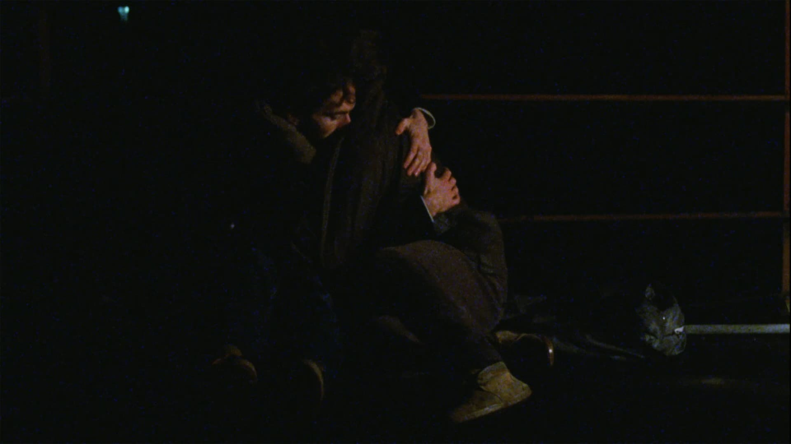
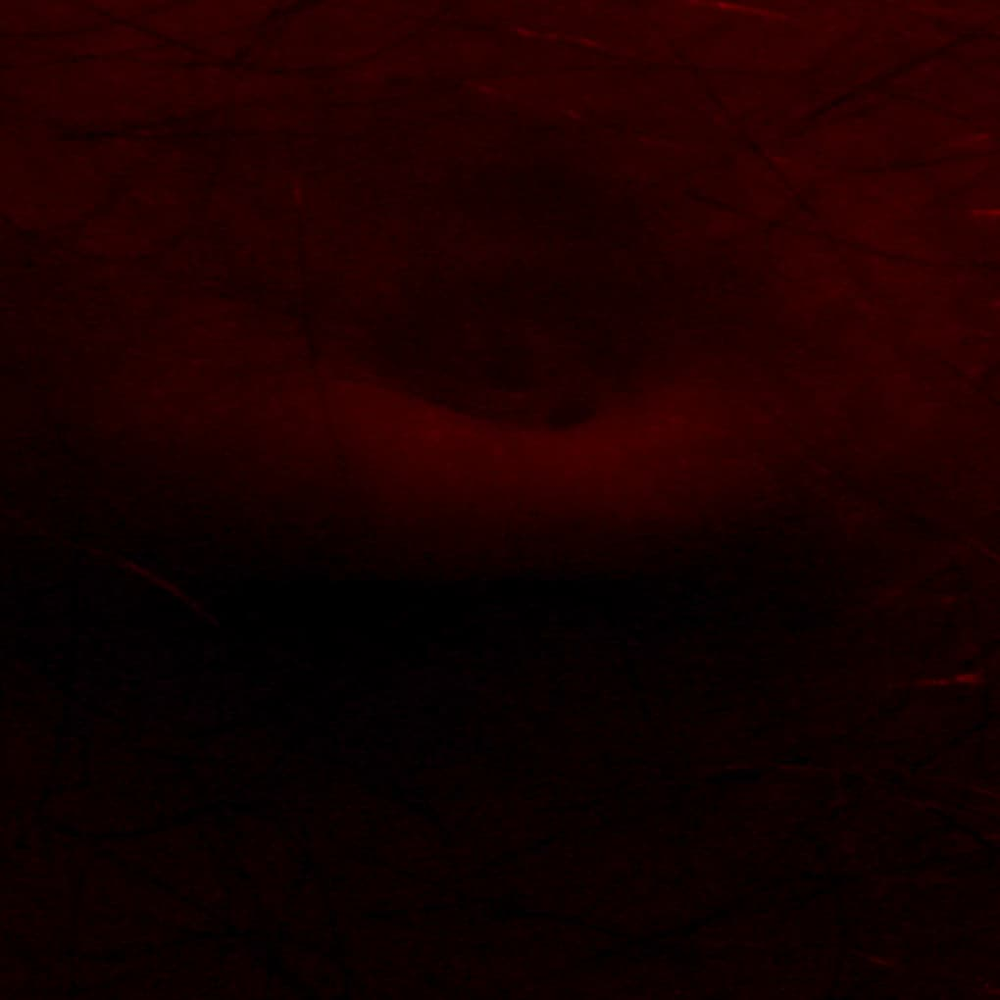
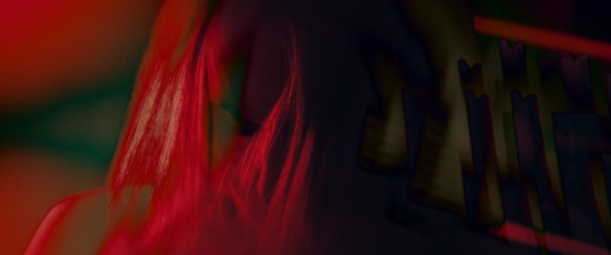
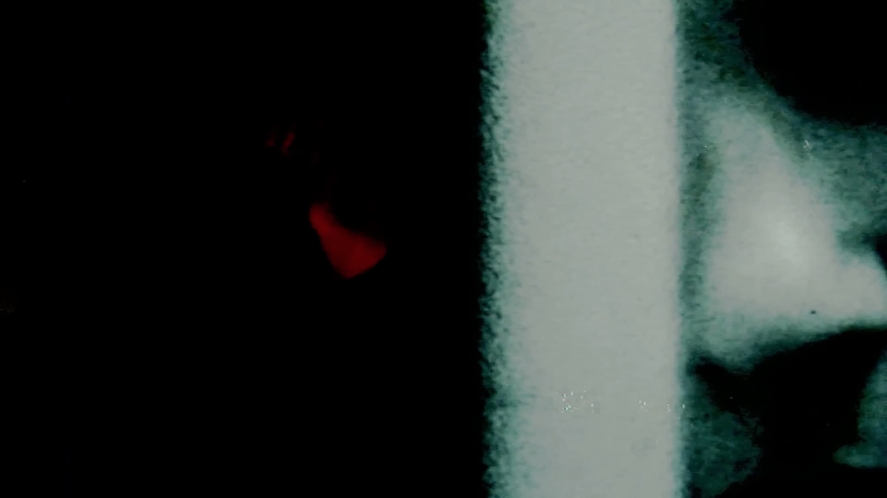
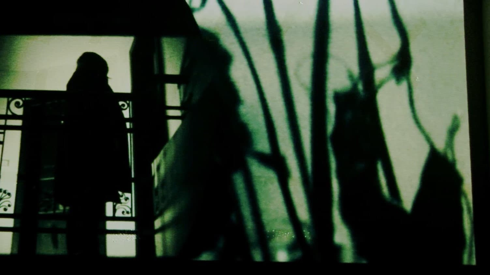

starts with a chance meeting at a train station, where people carry their memories in luggages.
In a collision two unnamed characters switch up their suitcases, accidentally taking home each other's pasts.
The film was devised together with the actors and cinematographer. A pre-study script was written, and promptly discarded at the start of filming.
With only one line of dialogue, the film explores how gentle rifts propagates in silence.



is a film about soundmaking, the intimacy and physicality of foley-recording, and bodies.
Thematically it explores consensual non-consent within the audio-visual contract. In this film the sound dominates the image, and the image plays the textural, mood bearing role that is usually the task of sound.
Produced in "reverse", the film was created from a foley-recording practice. The soundmaker's hands exciting leather, rubber, chains and rope, these recordings were sculpted in surround which is the basis for the visuals.
Eryc Birch plays multiple characters in one surreal wet dream. Punishing and caressing himself through the memories of past hook-ups.
The senses charge one another and create a sexual push/pull between sound and image.

A music video about love, loss, and danger.
The lyrics of this song belong to a much sweeter, saccharine love song. After that love soured up the words were reclaimed to express the frustration, anger, and sadness surrounding it.
The project is an exploration of non-linear creative processes. The music and visuals iterated on each other over two shooting periods, edits, and recompositions. To the extent that the final musical composition was achieved after the video.

An experimental film about a wall that reminices about its past life as a human being - who predicted his future life as that wall
The project came about as an unfilmable premise to challenge the imagination of the cinematographer. The script consited only of an unbroken dialouge between two characters with no other instruction, descriptions nor scene headings. The cinematographers divided the dialogue into scenes, which were further devised on location with the actors.
The film's aestethic is drawn from pirate bootleg (cam) recordings. Where handheld camcorders are snuck into the cinema and used to film the projection of un-released films, often failing to capture a steady and unobstructed image.
To achieve this the film was initally shot on HDV camcorders, edited, then projected on a wall. Which in turn was filmed again with the same camera.

